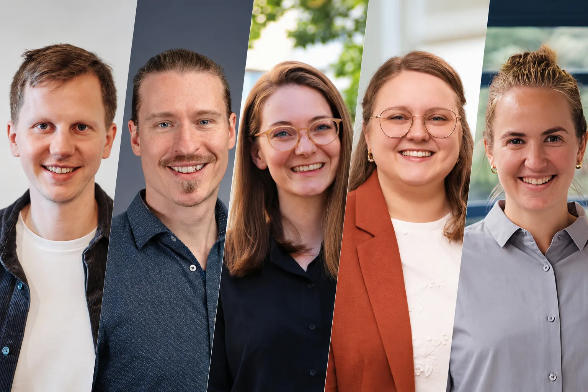
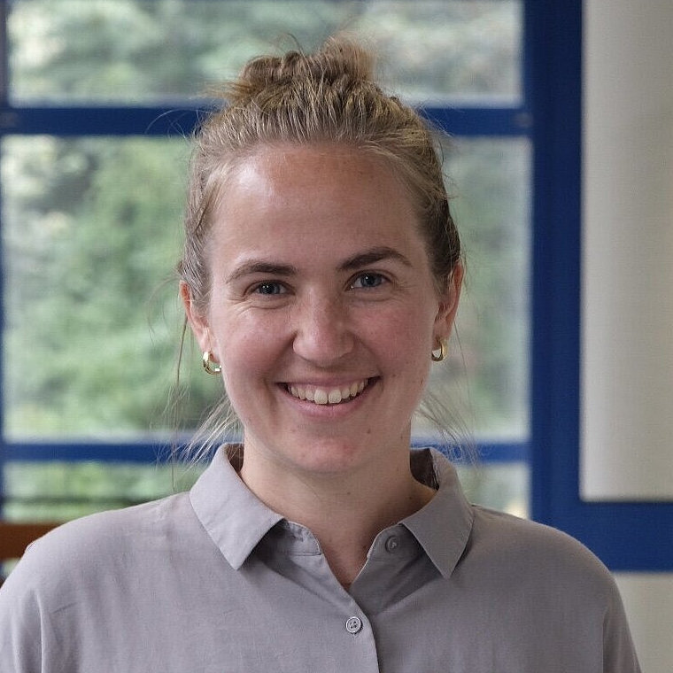
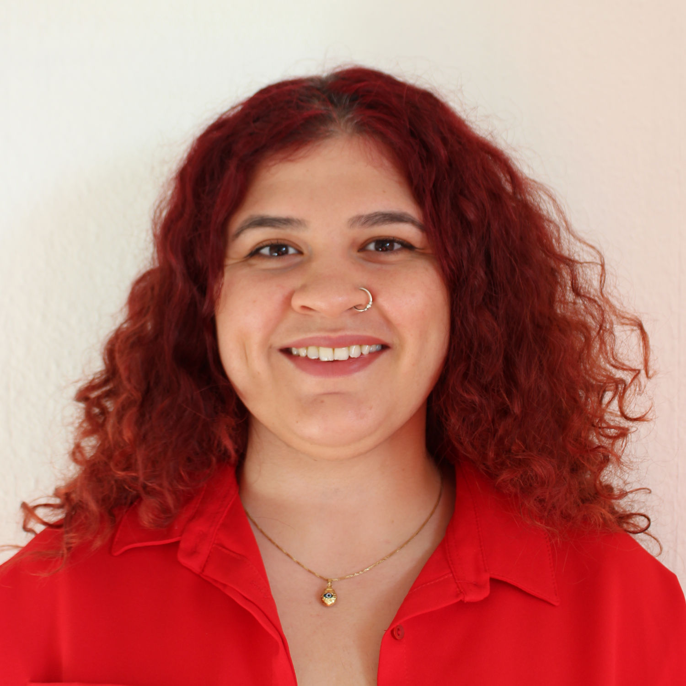

Das Projektteam¶
DAISY verbindet Informatik, Psychologie und Praxis. Drei Hochschulen und ein Praxispartner bilden den Verbund; vier assoziierte Partner wirken ohne eigene Förderung als Multiplikatoren und Dialogpartner mit.

Im Foto von links nach rechts: Dr. Steffen Becker (RUB), Gregor Mähler (WirtschaftsEntwicklungsGesellschaft Bochum mbH), Dr. Greta Ontrup (UDE), Dr. Alina Tausch (Uni Witten-Herdecke), Dr. Magdalena Wischnewski (UDE).
Projektpartner¶


RUB – Ruhr-Universität Bochum¶
Untersucht die Technik: Sicherheits- und Datenschutzarchitekturen von AIaaS-Diensten, empirische Systemanalysen, Demonstratoren.
Dr.-Ing. Steffen Becker¶
Technik
Ich leite das technische Teilprojekt von DAISY an der Ruhr-Universität Bochum. Meine Forschung verbindet IT-Sicherheit und Mensch-Computer-Interaktion. In DAISY untersuchen wir die tatsächlichen Datenschutzrisiken von AI-as-a-Service-Systemen und entwickeln Schutzmaßnahmen, die technisch belastbar und im Arbeitsalltag praktikabel sind.

UW/H – Universität Witten/Herdecke¶
Verbindet Mensch und Technik im Unternehmen: Wie fallen Entscheidungen über AIaaS, und wie führt man sie so ein, dass Erwartungen und Risiken zusammenpassen?
Dr. Alina Tausch¶
Organisationspsychologie
Ich übernehme im Projekt die Leitung des organisationspsychologischen Parts, aktuell noch von der Universität Witten/Herdecke aus. Basierend auf meiner Forschung an der Schnittstelle von Arbeitsgestaltung und Organisationspsychologie betrachte ich als Wirtschaftspsychologin, wie Entscheider:innen in Organisationen Entscheidungen über KI treffen und welche Rolle organisationale Rahmenbedingungen wie Organisationskultur spielen.

Lukas Bring¶
Promotionsstelle - Organisationspsychologie
Als Psychologe und wissenschaftlicher Mitarbeiter an der Universität Witten/Herdecke beschäftige ich mich im DAISY-Projekt mit den organisationspsychologischen Entscheidungsprozessen bei der Einführung von AI-as-a-Service-Systemen. Dabei untersuche ich, welche Kriterien Entscheidungsträger:innen bei der Auswahl und Einführung solcher Systeme berücksichtigen, wie sie Chancen und Risiken abwägen und welche Rolle Datenschutz und die Interessen der Beschäftigten dabei spielen. Ziel ist es, besser zu verstehen, wie Organisationen KI-Systeme verantwortungsvoll, datenschutzsensibel und menschengerecht einführen können.
UDE – Universität Duisburg-Essen¶
Blickt auf die Nutzenden: Welche Vorstellungen haben Menschen von AIaaS, und wie lässt sich ihre Kompetenz im Umgang damit stärken?
Dr. Greta Ontrup¶
Arbeitspsychologie
Ich übernehme im Projekt gemeinsam mit Dr. Magdalena Wischnewski die Leitung des arbeitspsychologischen Teilbereichs. Dabei bringe ich meine Expertise im Bereich Mensch-KI-Teaming sowie zu den Auswirkungen datengestützter Unternehmensprozesse auf Mitarbeitende ein. Im DAISY Projekt erforsche ich, wie Beschäftigte as-a-Service implementierte Systeme wahrnehmen, wobei der Fokus auf den Risiken liegt, die sich aus den subjektiven Vorstellungen und Interpretationen der Beschäftigten im Hinblick auf Datenschutz und Privatsphäre ergeben.
Dr. Magdalena Wischnewski¶
Arbeitspsychologie
Ich leite die Junior Research Group zu Human Factors in KI-Systemen und untersuche, was es bedeutet, „KI zu vertrauen“. Im DAISY-Projekt erforsche ich, wie Beschäftigte intelligente Systeme einordnen und verstehen und wie sich dies in ihrer Interaktion mit diesen Systemen widerspiegelt.

Muazzez Deniz Barut¶
Promotionsstelle - Psychologie
Ich bin Doktorandin an der Universität Duisburg-Essen und beschäftige mich mit den psychologischen Aspekten der Mensch-KI-Interaktion. Im DAISY-Projekt untersuche ich, wie Beschäftigte AI-as-a-Service-Systeme verstehen und welche mentalen Modelle sie von deren Funktionsweise sowie von den damit verbundenen Datenschutz- und Sicherheitsrisiken entwickeln. Ziel ist es, mögliche Fehlvorstellungen zu erkennen und einen informierten und datenschutzbewussten Umgang mit KI am Arbeitsplatz zu fördern.

BoWE – WirtschaftsEntwicklungsGesellschaft Bochum mbH¶
Praxispartner mit zwei Rollen: erprobt die Lösungen selbst als Pilotanwender und trägt sie in die Bochumer Wirtschaft und Stadtverwaltung.
Gregor Mähler¶
Praxis
Ich leite das Projekt DAISY bei der Bochum Wirtschaftsentwicklung und konzentriere mich auf sichere, datenschutzkonforme AI-as-a-Service-Lösungen und ihre praktischen Einsatzmöglichkeiten. Gemeinsam mit unseren Hochschulpartnern untersuche ich die technischen und organisatorischen Voraussetzungen und teile die Erkenntnisse mit anderen Unternehmen.